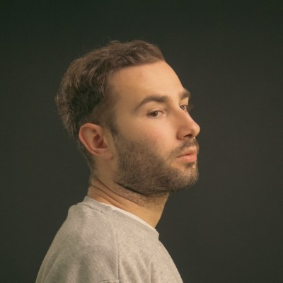

ardiyé / residents / resident 01
nazım kahramantürk

filmmaker and director focusing on raw, unpolished visual storytelling, rhythm-driven editing structures, and bespoke digital tools for independent workflows.
ardiyé / residents / resident 01

filmmaker and director focusing on raw, unpolished visual storytelling, rhythm-driven editing structures, and bespoke digital tools for independent workflows.